Realizacje KAIROX
Projekt koncepcyjnyWarsztat samochodowy
Bieg Rzeczy
Strona warsztatu porządkuje usługi według objawów, wyjaśnia przebieg naprawy i prowadzi do zgłoszenia. Klient opisuje auto i problem w formularzu podzielonym na trzy kroki.
- Usługi opisane językiem objawów i potrzeb
- Osobne podstrony o warsztacie i przygotowaniu do wizyty
- Zgłoszenie problemu z autem w trzech krokach
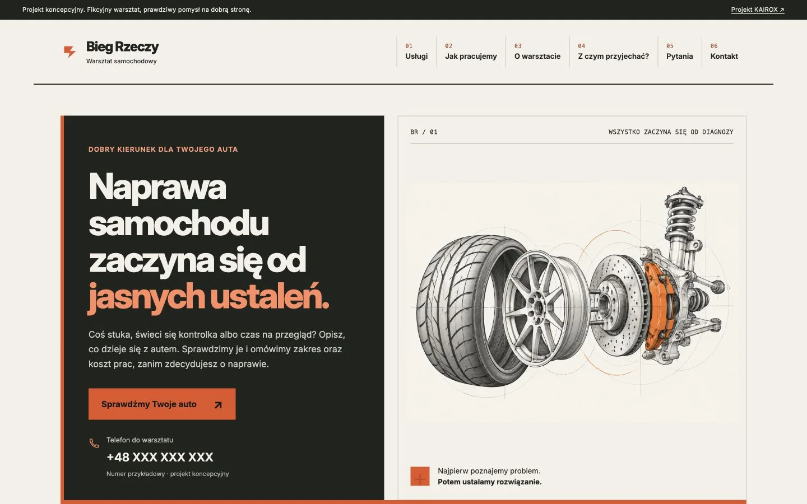
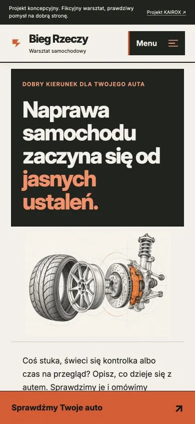
Projekt koncepcyjnySprzątanie i pranie
Czysty Układ
Strona rozdziela sprzątanie i pranie, wyjaśnia zakres usług i wskazuje informacje potrzebne do wyceny. Po wyborze usługi klient przechodzi do formularza dopasowanego do swojego zlecenia.
- Osobne ścieżki dla sprzątania i prania
- Zakres usług i informacje potrzebne do wyceny
- Pola formularza dopasowane do wybranej usługi
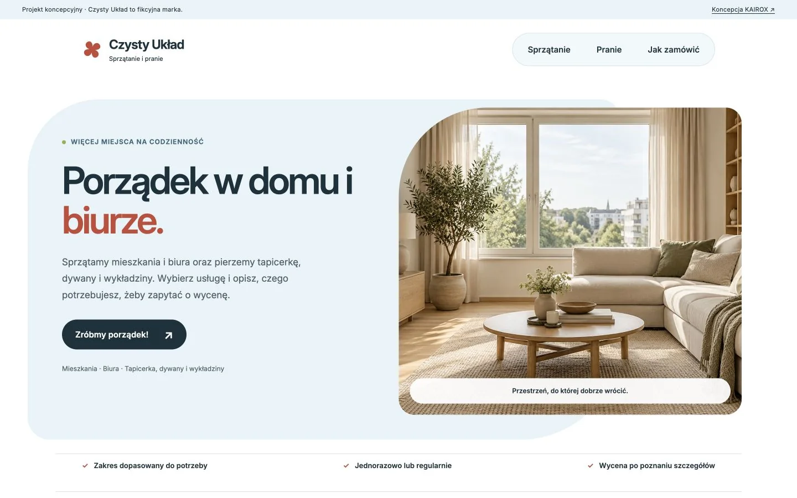
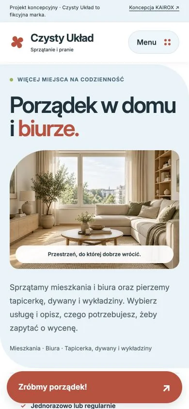
Projekt koncepcyjnyMeble na wymiar i renowacja
Słój i Forma
Strona oddziela meble na wymiar od renowacji, a galeria z filtrami pozwala przeglądać koncepcje. Każda z dwóch ścieżek prowadzi do formularza, w którym klient opisuje swój projekt krok po kroku.
- Dwie ścieżki: meble na wymiar i renowacja
- Galeria projektów koncepcyjnych z filtrowaniem
- Opis projektu w formularzu podzielonym na etapy


Projekt koncepcyjnyInteraktywna galeria
Galeria Klik
Przeglądanie marek przypomina poruszanie się po budynku. Tematyczne piętra i mapa pozwalają zacząć od kategorii, a potem wybrać konkretną markę.
- Trzy tematyczne piętra porządkują katalog
- Mapa pokazuje układ galerii
- Osobne przestrzenie zachowują charakter marek
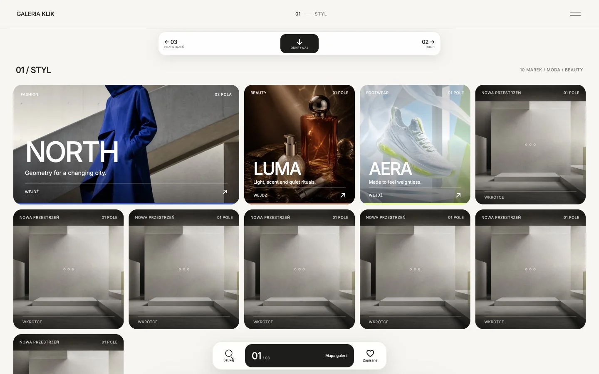
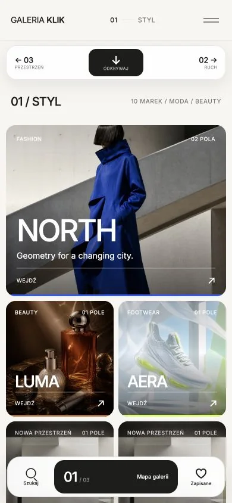
Projekt własnyArchiwum podróży
My Trip World
Globus prowadzi do albumów z konkretnych wyjazdów. Miejsce i data pomagają odnaleźć podróż, a wyszukiwarka skraca drogę do znanych wspomnień.
- Geograficzny przegląd odwiedzonych miejsc
- Albumy łączą relacje, zdjęcia i filmy
- Wyszukiwanie według miejsca lub daty
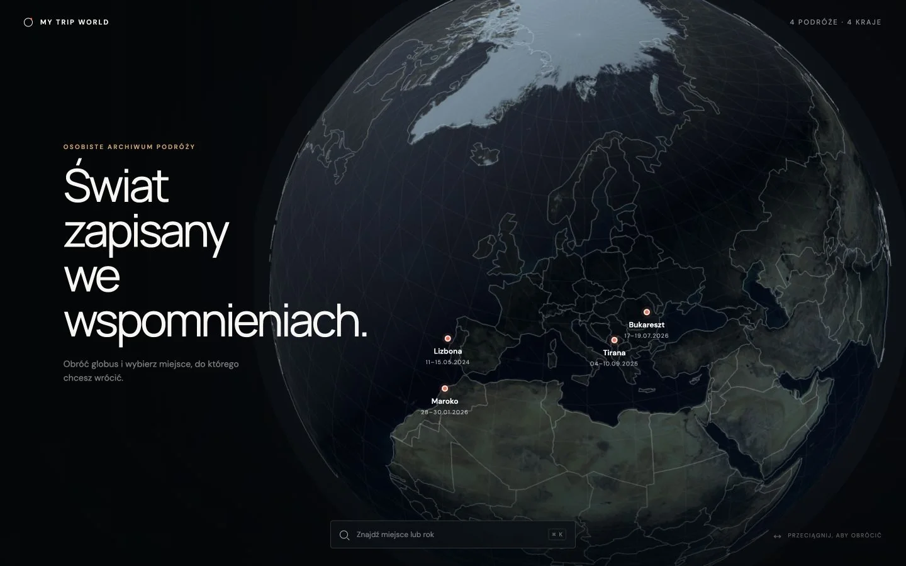
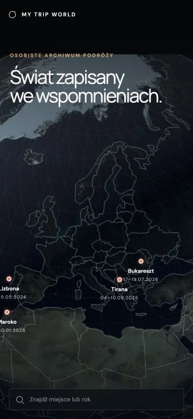
Projekt własnyInteraktywna gra
Archiwum Śledcze
Akta, notatnik i działania tworzą przestrzeń do samodzielnego prowadzenia śledztwa. Interfejs porządkuje informacje i pokazuje czas oraz dostępne środki.
- Osobne widoki akt, notatek i działań
- Widoczny czas i budżet śledztwa
- Zapis postępu pozwala wrócić do sprawy
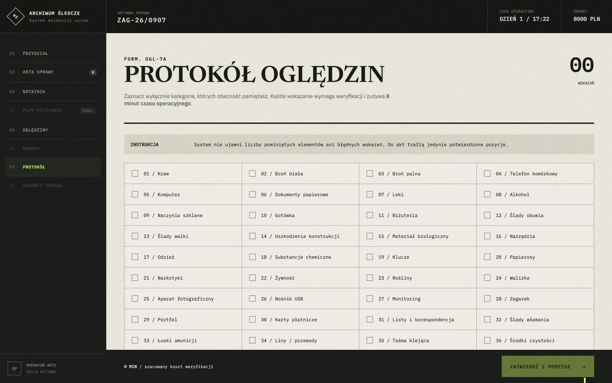
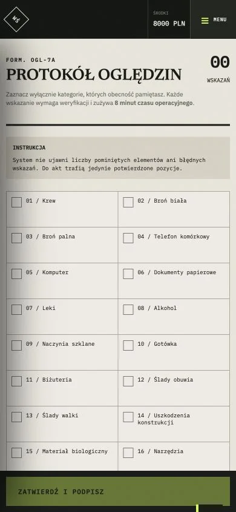
Projekt koncepcyjnyRestauracja
AMO
„Na co masz ochotę?” to punkt wyjścia do przeglądania menu bistro. Kategorie, bestsellery i filtry pomagają znaleźć danie na telefonie.
- Wybór według apetytu, kategorii lub budżetu
- Zdjęcia wyróżniają wybrane dania
- Przejście od menu do koszyka lub rezerwacji
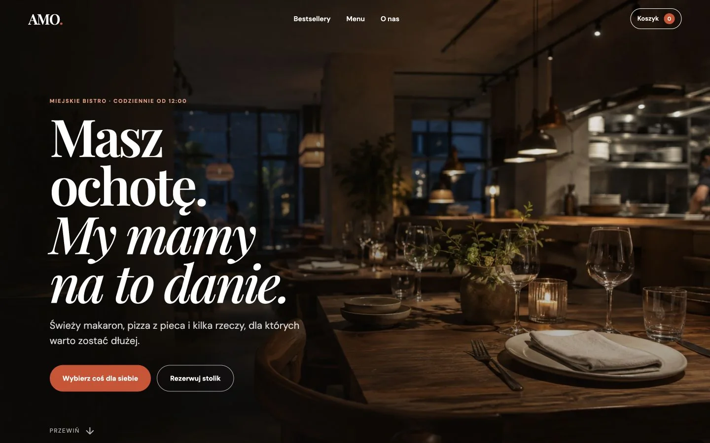
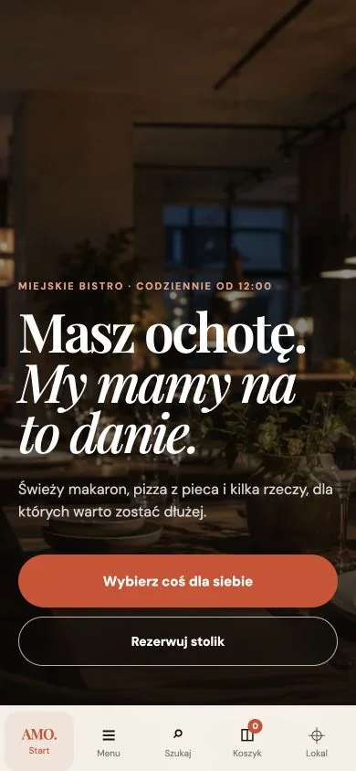
Twój projekt
Porozmawiajmy o stronie, która ma konkretną rolę do spełnienia
Zaczniemy od zrozumienia sytuacji, odbiorców i celu biznesowego.